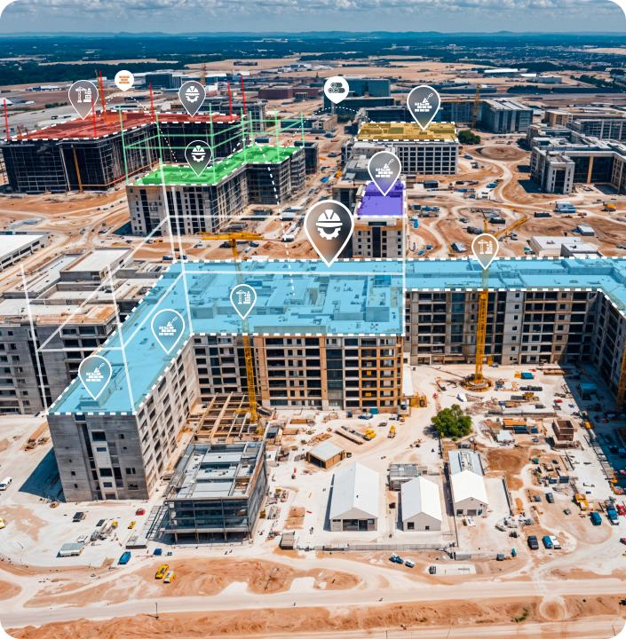
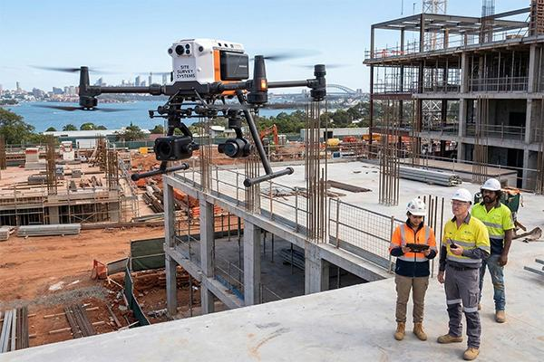
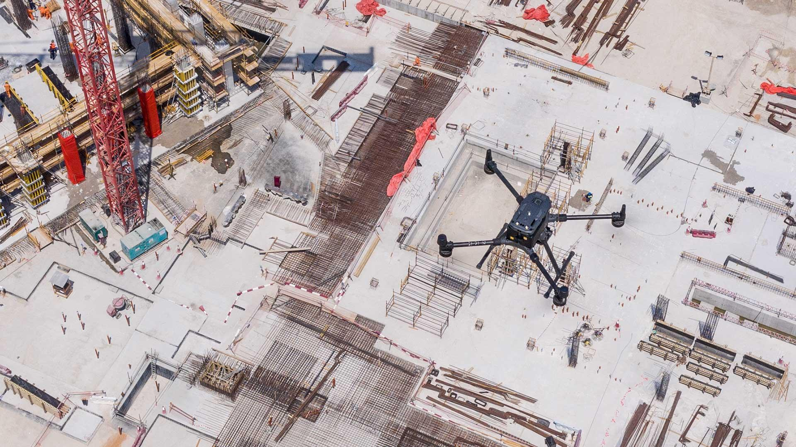
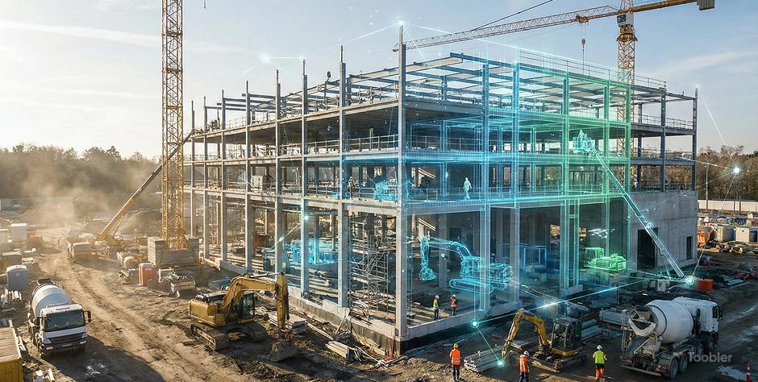
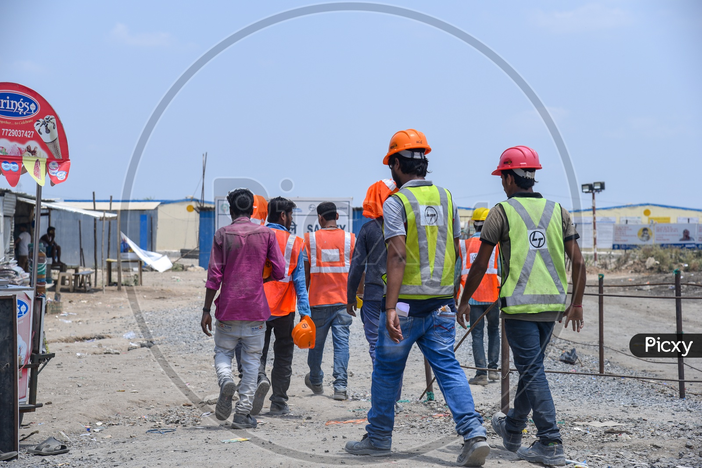
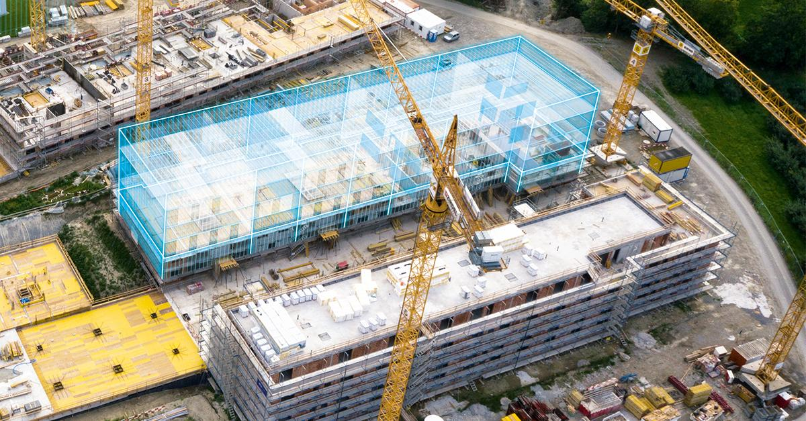
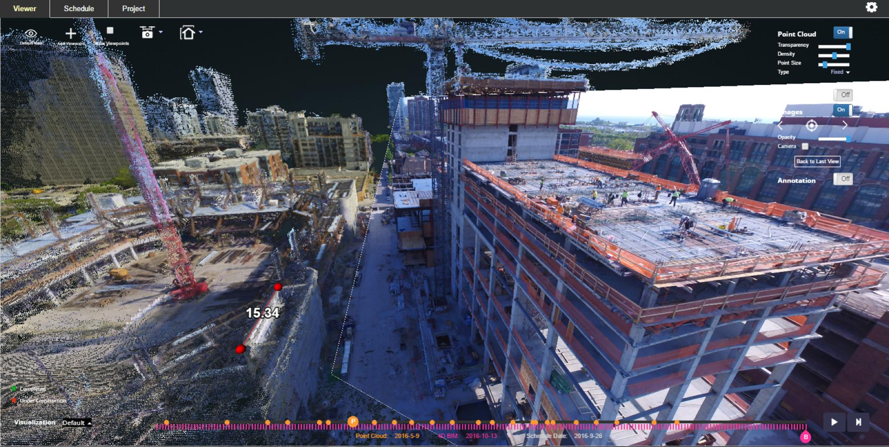
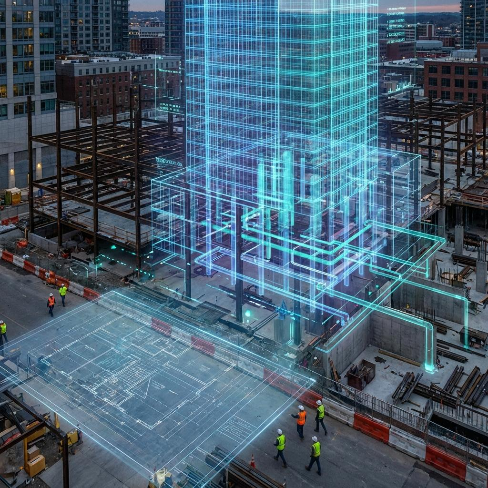

Spatial intelligence for construction sites
Real-time digital twins built from drone vision, semantic scene understanding and spatial AI — turning raw pixels into decisions on the ground.
Sites generate massive visual information, yet critical decisions are still made on incomplete, out-of-date evidence.
RoVis fuses visual data into a structured spatial model, then reasons over it — converting raw pixels into actionable site intelligence.


Multi-view reconstruction fuses every frame into one persistent, semantically labelled 3D twin.

Safety, resources and progress — every capability reasons over the same live spatial model.

A natural-language agent sits on top of the twin. Ask in plain English — it navigates the 3D model, analyses it, and answers with located, actionable results.

Once the twin exists, RoVis turns every insight into a concrete action on the ground — routed to the right person, automatically.


RoVis transforms visual information into spatial intelligence — starting on the site, scaling to the city.